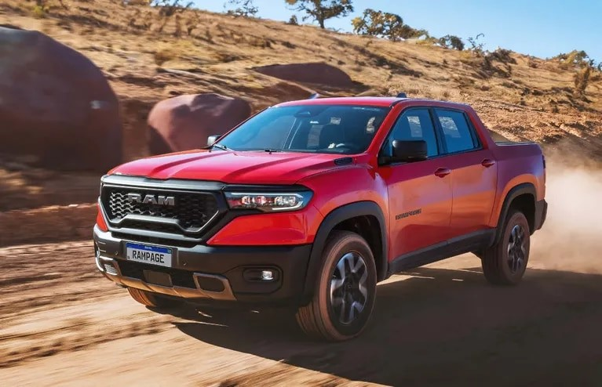
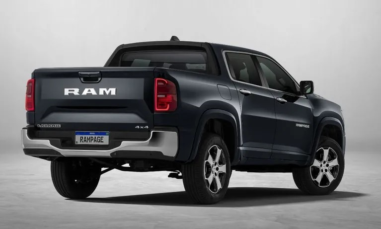
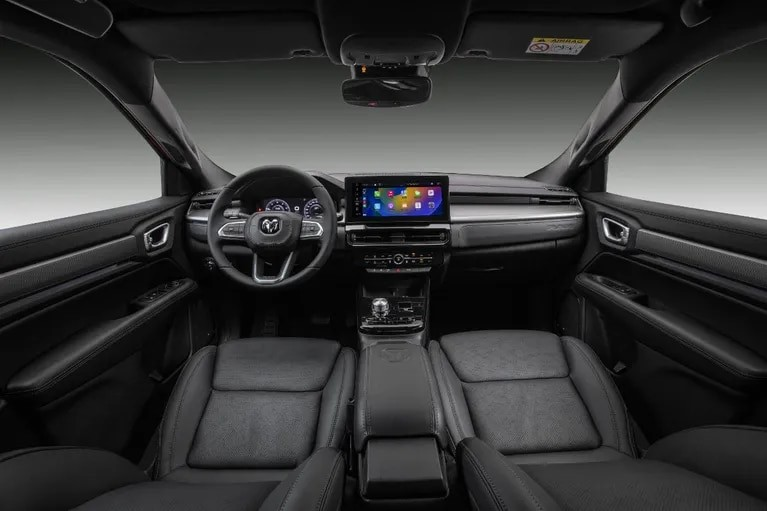

SE PRESENTA LA NUEVA RAM RAMPAGE
Ram realizó en Brasil el lanzamiento mundial de la Rampage, su nueva pick up compacta desarrollada y producida en el país vecino, desde donde llegaría al mercado argentino entre fines de 2023 y principios de 2024. Creada con la misma plataforma que la Fiat Toro y los Jeeep Commander, Compass y Renegade, la camioneta monocasco fue revelada con una gama para Brasil compuesta por las versiones Rebel, Laramie y R/T
Ram realizó en Brasil el lanzamiento mundial de la Rampage
su nueva pick up compacta desarrollada y producida en el país vecino, desde donde llegaría al mercado argentino entre fines de 2023 y principios de 2024. Así es la nueva Ram Rampage Creada con la misma plataforma que la Fiat Toro y los Jeeep Commander, Compass y Renegade, la camioneta monocasco fue revelada con una gama -para Brasil- compuesta por las versiones Rebel, Laramie y R/T. La particularidad que tiene la RAM Rampage es que fue diseñada y desarrollada en Latinoamérica, junto a equipos de norteamérica, habiendo participado alrededor de 800 ingenieros y técnicos durante 1,2 millones de horas. Es el quinto modelo que se fabrica en la Planta del Grupo en Goiana, Pernambuco, Brasil; donde también se produce la Fiat Toro, el Jeep Renegade, el Jeep Compass y el Jeep Commander, habiendo ya alcanzado 1.4 millones de unidades fabricadas en esa factoría.
El diseño exterior tiene el ADN de Ram y se combina con tres opciones de configuración según la versión.
Si hablamos de su diseño conjuga las lineas de sus hermanas mayores: RAM 1500, 2500 y 3500. Se presenta en tres versiones Laramie, Rebel y R/T. La versión Rebel se destaca por las piezas exteriores en color negro y las llantas y la parrilla en formato trapezoidal con un exclusivo diseño. En la RAM Rampage Laramie se destacan los acabados cromados y plateados como la parrilla delantera, marcos de ventanas, cubiertas de espejos, manijas de puertas, logos, llantas y paragolpes trasero. Ya en la versión más deportiva, la R/T La Rebel está orientada a la conducción off-road (incluye llantas de 17″ y neumáticos todoterreno), la Laramie aporta lujo y contiene cromados y llantas de 18″ y la R/T es la opción deportiva con piezas negras como las llantas de 19 pulgadas. Interior, capacidad y equipamiento Al igual que el exterior, la configuración del habitáculo varía dependiendo de la versión. Todas tienen tablero digital de 10,3 pulgadas, sistema multimedia con pantalla de 12,3″, asiento del conductor con ajustes eléctricos, freno de estacionamiento electrónico, tapizado de cuero, Ram Connect (plataforma de servicios conectados) y cargador de teléfono inalámbrico con refrigeración.
La caja de carga posee un revestimiento de plástico y un volumen de 980 litros. Las versiones diésel soportan 1.015 kilogramos y las nafteras admiten 750 kg. El equipamiento de seguridad incluye siete airbags, luces LED delanteras y traseras, control de crucero adaptativo, monitoreo de punto ciego, mantenimiento de carril y alerta de colisión frontal con frenado autónomo y detección de peatones y ciclistas. Dos opciones de mecánica Otra de las novedades de la Rampage es el motor naftero 2.0 turbo (Hurricane 4) con 272 caballos y 400 Nm. Está presente en todas las versiones, que incluyen el botón Sport o R/T en la más deportiva, que acelera de 0 a 100 km/h en 6,9 segundos y brinda una velocidad máxima (limitada) de 220 km/h. Las Rebel y Laramie también poseen el conocido motor turbodiésel Multijet 2.0 con 170 caballos y 380 Nm (igual que el Commander) con el que acelera de 0 a 100 km/h en 10,9 segundos y alcanza los 186 km/h. Los dos motores se combinan con la caja automática con nueve velocidades, selector giratorio y levas en el volante, mientras que la tracción 4x4 posee reparto automático entre los ejes y función 4WD Low. Además, la pick up tiene suspensión independiente en las cuatro ruedas (deportiva en la versión R/T) y frenos con discos delanteros y traseros.
ARTICULOS DESTACADOS
Nuevo BMW 430i Gran Coupé Sportline: lanzamiento en Argentina, desde U$S 101.900
La firma de Munich presentó en nuestro país la segunda generación de la variante “Coupé de 4 puertas” del Serie 4, destacándose por su mayor versatilidad y espacio interior. Se comercializa en una única versión, impulsada por el motor TwinPower Turbo 2.0, que desarrolla 258 CV y se acopla a una caja automática de 8 marchas.
Nuevo peugeot 208 gt?
Ya te contamos que el Peugeot 208 producido en Argentina (en la planta de El Palomar) sumaría el motor 1.0 turbo de Fiat. Ahora, la prensa brasileña adelantó que serían dos los nuevos motores sobrealimentados para el hatchback.

Marca francesa presenta su nueva suv
Se presentó en Europa una SUV que se destaca por su estilo coupé y con un nombre heredado de un avión de carreras monoplaza de 1934 que la compañía francesa diseñó para batir récords.
Se Viene la nueva chevrolet Spin
Chevrolet avanza con el desarrollo de la Spin, su modelo familiar con hasta siete plazas que produce en Brasil, desde donde llega al mercado argentino.La nueva Chevrolet Spin incorporará como novedades centrales un instrumental 100 por ciento digital integrado a la pantalla central y seis airbags de serie (en todas las versiones).